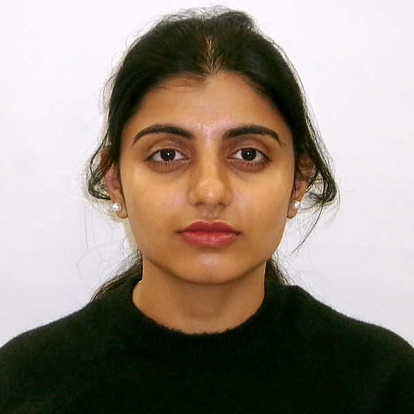

Gayathri Galiveeti

Professional Summery
Aspiring Computer Science professional pursuing a master’s degree, with a solid foundation in Java, C, data structures, HTML, and SQL. Eager to apply
theoretical knowledge in a practical setting through a summer internship. Highly motivated to contribute to innovative projects and gain hands-on
experience. Actively seeking opportunities to explore software development and web development.
Education
MASTER’S IN COMPUTER SCIENCE
University of North Texas
Related Coursework: Software Engineering, Software Testing, Graph Theory, Computer Security, Fundamentals of Database Management System, Secure
E-Commerce, Computer Forensics
BACHELOR’S IN COMPUTER SCIENCE
GITAM University
Related Coursework: Java, C, OOPS with C++, Data structures, Computer Networks, Data Communications, Web Technologies, Machine Learning,
Cloud Computing, Big Data, Project Management, Internet of things, Web Application Security
Certifications
- java - coursera
- machine leraning - coursera
- Cloud Computing - coursera
Techinical Skills
- Programming Languages: Java, C, Python
- Web Development: HTML, CSS
- Concepts: Data Structures and Algorithms, Object-Oriented Programming
- Tools/Software: Eclipse, IDE, Jupiter Notebook,Git
Skills
- Quickly adjusting to new technologies and methodologies.
- Ability to work effectively in a team environment.
- Analyzing and evaluating issues to make informed decisions.
Experience
Intern- Pragyan-ai
- Developed and tested a machine learning-based fall detection system using TensorFlow, OpenCV, and Scikit-learn, aimed at timely medical
intervention for fall victims.
- Utilized images and videos as inputs to accurately identify human falls, enhancing the safety and quality of life for the elderly and individuals with
disabilities.
- Demonstrated strong multitasking abilities and creative problem-solving skills in a dynamic startup environment.
- Contributed to a project with significant potential for social impact, aligning with Pragyan-ai’s mission to improve health and wellness through
innovative technology solutions.
- Actively engaged in learning and applying advanced machine learning techniques for real-world applications, complementing academic studies
in computer science.
Environment: Anaconda Jupiter Notebook, TensorFlow, OpenCV, visual studio.
Academic Projects
Educational App For Software Testing:
Developed web application using java, HTML, CSS. It is an online e learning platform. It has 3 tier architecture.
And tested it manually and automatically, cleared the failed cases and completed it successfully.
ID card extraction using machine learning:
- Utilized cutting-edge OCR technology to accurately extract and understand information from ID documents, achieving a high accuracy rate of
91%.
- Extracted data is systematically stored in dedicated databases, enabling easy search and scan capabilities for quick information access.
- Developed a real-time embedded system capable of automatically identifying the document type, whether Aadhar card or driving license,
and precisely extracting the relevant information.
- Employed advanced computer vision strategies to facilitate the efficient extraction of data from images of identity cards, enhancing the
usability of image-stored data.
- By transforming image-based data into computer-usable formats, the project significantly improves the efficiency and effectiveness of data
processing and utilization, supporting various scale economies.
Customer segmentation using machine learning:
- Implemented K-means clustering algorithm to segment customers based on criteria such as gender, age, annual income, and spending score.
- Achieved personalized marketing strategies by identifying distinct customer groups, enabling targeted communications and offers.
- Enhanced customer engagement by tailoring marketing campaigns and offers to meet the specific needs and preferences of different
segments.
- Optimized resource allocation for marketing efforts by focusing on the most relevant customer segments, improving return on investment.
- Facilitated data-driven decision-making for promotional strategies, leading to more effective user-specific campaigns and offers.
Other
Contact Me